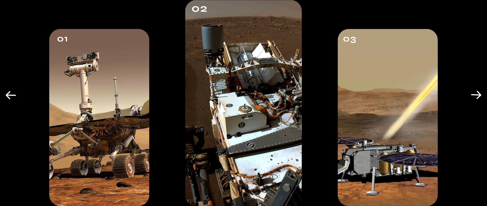

| Mars Trip | ||||||
| That's how dreams come true. Enjoy the best trip of your life. |
||||||
| Planet Mars | ||||||
| The Romans knew of seven bright objects in the sky: the Sun, the Moon, and the five brightest planets.
They named them after their most important gods. The Romans were great soldiers and thought Mars, the god of war, was very important. Mars, the red planet, was named after this god of war. |
||||||
| Gallery | ||||||
|  | ||||||
| Process | ||||||
| The process of becoming a Martian can be very difficult, but it definitely pays off. At the end, the experience makes you want to live there forever. | ||||||
| Avaliable Tickets | ||||||
| The cruise phase begins after the spacecraft separates from the rocket, soon after launch.
The spacecraft departs Earth at a speed of about 24,600 mph (about 39,600 kph). The trip to Mars will take about seven months and about 300 million miles (480 million kilometers). |
||||||
| Contact | ||||||